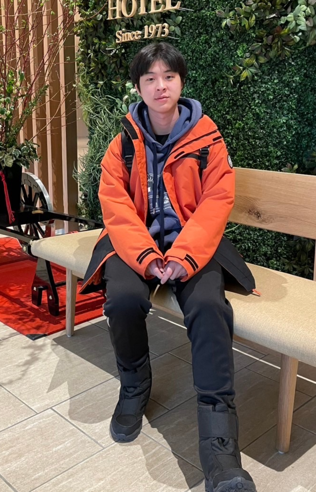

- 教育
- 北市大附小(2012~2018)
- 北市中正國中(2018~2021)
- 北市成功高中(2021~2024)
- 陽明交通大學 機械工程系(2024~2028)
- 基本資料
- 姓名：陳沅澧
- 生日：2006年 01月 15日
- 經驗
- 興趣愛好
- 打羽球、寫程式、聽Kpop
- 聯絡資料
- mobile phone : 0973061307
- E-mail : caspercyuan@gmail.com